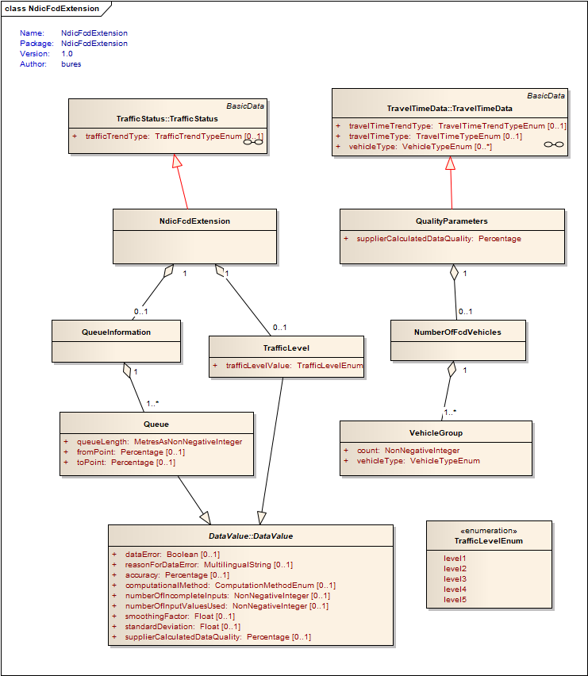
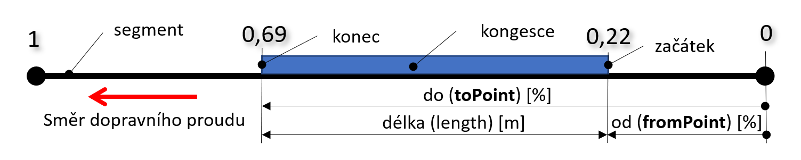

Koncepty¶
Popisovaný formát umožňuje poskytování stavových informací získaných z flotily plovoucích vozidel (FCD). Jedná se o dojezdové doby, rychlost dopravního proudu, stupně dopravní zátěže a odhad délky kolon a polohy na sadě předem definovaných poloh. Na rozdíl od předchozí verze formátu x-format:cz-ndic_d2-fcd-v1.0 zavádí rozlišení dle typu vozidel na informace pro nákladní a pro osobní automobily.
Publikace typu ElaboratedDataPublication¶
Formát vychází z DATEX II publikace typu ElaboratedDataPublication [16157-5] a využívá ji pro přenos informací o dojezdových dobách, rychlostech a stupních dopravy na sadě předdefinovaných poloh, odděleně podle typu vozidla.
Informace o stupních dopravy, délce kolon i s jejich počátky a konci a typem vozidla jsou přidány prostřednictvím rozšíření úrovně B třídy TrafficStatus DATEX II modelu.
Informace o kvalitě dat a počtu vozidel FCD na segmentu, včetně jejich typu, jsou přidány prostřednictvím rozšíření úrovně B třídy TravelTimeData DATEX II modelu.
1<?xml version="1.0" encoding="utf-8"?>
2<d2LogicalModel modelBaseVersion="2" xmlns="http://datex2.eu/schema/2/2_0" xmlns:xsi="http://www.w3.org/2001/XMLSchema-instance" xsi:schemaLocation="http://datex2.eu/schema/2/2_0 ../schema/schema.xsd">
3 <exchange>
4 <supplierIdentification>
5 <country>cz</country>
6 <nationalIdentifier>ŘSD</nationalIdentifier>
7 </supplierIdentification>
8 </exchange>
9 <payloadPublication lang="cs" xsi:type="ElaboratedDataPublication">
10 <feedType>x-format:cz-ndic_d2-fcd-v1.1</feedType>
11 <publicationTime>2022-12-18T00:00:06+01:00</publicationTime>
12 <publicationCreator>
13 <country>cz</country>
14 <nationalIdentifier>ŘSD</nationalIdentifier>
15 </publicationCreator>
16 <periodDefault>300</periodDefault>
17 <timeDefault>2022-12-17T23:59:35+01:00</timeDefault>
18 <headerInformation>
19 <confidentiality>noRestriction</confidentiality>
20 <informationStatus>real</informationStatus>
21 </headerInformation>
Informace FCD pro jeden segment (polohu) je uvedena ve 3 elementech elaboratedData, ty totiž mohou obsahovat pouze jeden typ informace:
hustota provozu ve třídě TrafficStatus + stupně provozu (dle CZ) a kolony v jejím rozšíření,
rychlost dopravy ve třídě TrafficSpeed a
čas průjezdu ve třídě TravelTimeData + kvalitativní parametry v jejím rozšíření.
Poznámka
V případě segmentů, kde jsou samostatně počítány stavové informace podle typu vozidla je počet elementů elaboratedData ztrojnásoben, tedy celkem 9 elementů (3x anyVehicle, 3x car a 3x lorry) na segment v jeden okamžik.
Element elaboratedData nemá vlastní unikátní identifikátor a je jednoznačně určen časem publikace a identifikátorem odkazované polohy.
Identifikace profilu poskytovaných dopravních informací je uvedena v elementu feedType odkazujícím na konkrétní dokumentaci zveřejněnou v národním přístupovém bodu.
Vypočítané FCD informace¶
Stavové informace jsou uvedeny pro všechna vozidla společně (anyVehicle) i odděleně (car, lorry) podle typu polohy:
Pro polohy s tzv. sdruženým dopravním proudem, kde nemá smysl vyhodnocovat dopravní parametry odděleně podle typu vozidel, tj. vozidla se pohybují smíšeně či v jednom jízdním pruhu.
Pro polohy s tzv. odděleným dopravním proudem, kde má smysl vyhodnocovat dopravní parametry odděleně podle typu vozidel, tj. vozidla se pohybují odděleně, ve více pruzích, a mohou vznikat oddělené kolony vozidel podle jejich typu. Pro tyto polohy je uvedena sdružená informace pro všechna vozidla a dále elementy vztahující se ke stejné poloze pro osobní a nákladní vozidla, podle toho, zda se na poloze v době vyhodnocení daný typ vozidel vyskytoval.
Stavové informace zahrnuté v tomto profilu jsou:
rychlost dopravního proudu [km/h] za
aktuálních podmínek
při volném provozu (freeFlow)
dojezdové doby [s] za
aktuálních podmínek
při volném provozu (freeFlow)
aktuální zpoždění [s]
stav provozu [-]
Další informace zahrnuté v tomto profilu jsou:
reakční doby systému [s]
Stavové informace zahrnuté v tomto profilu rozšířením třídy TrafficStatus jsou:
stupně provozu [-] (1-5 tak jak jsou používány v ČR)
kolony na segmentu, odhad jejich délky [m] a odhad počátku a konce [%] kolony na odkazovaném segmentu
Společné kvalitativní parametry zahrnuté v tomto profilu rozšířením třídy TravelTimeData jsou:
míra spolehlivosti dat [-]
počet FCD vozidlových sond [-] na segmentu
Informace zahrnuté rozšířením jsou uvedeny na obrázku 1.

Rozšíření třídy TrafficStatus a TravelTimeData.¶
Následující články jsou věnovány popisu základních stavebních kamenů publikace.
Kategorie vozidel¶
Dopravní parametry jsou vypočítané odděleně pro osobní (car) a nákladní (lorry) a všechna vozidla (anyVehicle) v samostatných elementech elaboratedData, identifikovaných hodnotou vehicleType.
Element třídy TrafficStatus bylo nutné o položku vehicleType rozšířit v extenzi typu B.
39 <ndicFcdExtension>
40 <vehicleType>anyVehicle</vehicleType>
Element třídy TrafficSpeed používá forVehiclesWithCharacteristicsOf obsahující i vehicleType.
119 <forVehiclesWithCharacteristicsOf>
120 <vehicleType>anyVehicle</vehicleType>
121 </forVehiclesWithCharacteristicsOf>
Element třídy TravelTimeData přímo obsahuje položku vehicleType.
166 <vehicleType>anyVehicle</vehicleType>
167 <!-- travel time information -->
Míra spolehlivosti dat¶
Míra spolehlivosti dat charakterizuje kvalitu datového vzorku a nabývá hodnot <0-1> kdy 1 znamená 100% spolehlivá data. Kvalita datového vzorku se hodnotí podle stáří a množství použitých údajů z vozidlových sond. Vzorec výpočtu není součástí tohoto profilu.
Míra spolehlivosti dat je udávána pro každou vypočítanou hodnotu zvlášť atributem supplierCalculatedDataQuality.
176 <freeFlowSpeed numberOfInputValuesUsed="9999" supplierCalculatedDataQuality="0.8">
Poznámka
V profilu s dělenými informacemi podle typu vozidla se extenze pro míru spolehlivosti nepoužívá.
Počet plovoucích vozidel¶
Aktuální počet plovoucích vozidel, ze kterých byly hodnoty dopravních parametrů vypočítány, je udáván pro každou vypočítanou hodnotu zvlášť atributem numberOfInputValuesUsed.
34 <trafficStatus numberOfInputValuesUsed="9" supplierCalculatedDataQuality="1">
Některá statistická data, jako jsou freeFlowSpeed nebo freeFlowTravelTime, jsou na počtu plovoucích vozidel nezávislá. V takovém případě je hodnota počtu vozidel, pokud je uvedena atributem numberOfInputValuesUsed, nastavena na 9999.
172 <freeFlowTravelTime numberOfInputValuesUsed="9999" supplierCalculatedDataQuality="1">
Rychlost dopravního proudu¶
Rychlost dopravního proudu [km/h] na segmentu je uvedena ve dvou samostatných elementech elaboratedData.
Aktuální průměrná rychlost averageVehicleSpeed v měřeném časovém okně je uvedena ve třídě TrafficSpeed elementu basicData.
123 <averageVehicleSpeed numberOfInputValuesUsed="9" supplierCalculatedDataQuality="1">
124 <speed>38</speed>
125 </averageVehicleSpeed>
Rychlost volného průjezdu vozidla freeFlowSpeed je uvedena ve třídě TravelTimeData v elementu basicData.
176 <freeFlowSpeed numberOfInputValuesUsed="9999" supplierCalculatedDataQuality="0.8">
177 <speed>50</speed>
178 </freeFlowSpeed>
Dojezdová doba a aktuální zpoždění¶
Dojezdová doba [s] na segmentu je uvedena jedním elementem elaboratedData v sub-elementu basicData typu TravelTimeData.
Aktuální průměrná dojezdová doba travelTime.
168 <travelTime numberOfInputValuesUsed="9" supplierCalculatedDataQuality="1">
169 <duration>549</duration>
170 </travelTime>
Průměrná dojezdová doba volného průjezdu freeFlowTravelTime.
172 <freeFlowTravelTime numberOfInputValuesUsed="9999" supplierCalculatedDataQuality="1">
173 <duration>259</duration>
174 </freeFlowTravelTime>
Aktuální zpoždění je vyjádřeno implicitně jako rozdíl hodnot aktuální průměrné dojezdové doby (travelTime) a doby volného průjezdu (freeFlowTravelTime).
Stupně dopravy¶
Stupeň (kvalita) provozu je vyjádřena hodnotou z číselníku TrafficStatusEnum jak je definováno v normě [16157-3] v tabulce A.125.
34 <trafficStatus numberOfInputValuesUsed="9" supplierCalculatedDataQuality="1">
35 <trafficStatusValue>congested</trafficStatusValue>
36 </trafficStatus>
Hodnota |
Význam |
Definice |
|---|---|---|
impossible |
Dopravní kolaps |
Vozidla na komunikacích stojí nebo v kolonách jen velmi pomalu popojíždějí, průměrná rychlost je velmi malá. |
congested |
Dopravní kolony |
Tvoří se kolony vozidel, provoz není plynulý, průměrná rychlost je výrazně snížená, průjezd křižovatkami je narušen. |
heavy |
Silný provoz |
Tvoří se proudy vozidel, provoz je plynulý, avšak rychlost nižší než maximální povolená. |
freeFlow |
Plynulý provoz |
Doprava je v daném směru plynulá. Provoz probíhá nejvyšší povolenou nebo vyšší rychlostí a řidiči mohou volně přejíždět mezi pruhy. |
unknown |
Neznámý |
Dopravní podmínky jsou neznámé. |
Třída TrafficStatus je rozšířena (rozšíření úrovně B) o explicitní určení stupňů dopravy, tak jak jsou stanoveny a používány v ČR. Stupně provozu (1-5) jsou stanoveny v třídě TrafficLevel pomocí frází „level1“ až „level5“, v elementu trafficLevelValue. Jejich význam, uvedený v číselníku TrafficLevelEnum, vychází z podmínek stanovených v ČR. Další atributy, jako např. trend, se neuvádí.
40 <vehicleType>anyVehicle</vehicleType>
41 <trafficLevel>
42 <trafficLevelValue>level4</trafficLevelValue>
43 </trafficLevel>
Hodnota TrafficLevel je vypočítaná z % rozdílu aktuální rychlosti dopravního proudu a rychlosti dopravního proudu na volném segmentu.
Stupeň |
Popis |
% rozdílu |
|---|---|---|
1 |
provoz pouze jednotlivých vozidel, jízda je plynulá |
<85 %, 100 %) |
2 |
provoz malých skupinek vozidel, jízda je plynulá, odbavování na křižovatkách bez problémů |
<75 %, 85 %) |
3 |
tvoří se proudy vozidel, provoz je plynulý, avšak rychlost nižší než maximální povolená |
<50 %, 75 %) |
4 |
tvoří se kolony vozidel, provoz není plynulý, průměrná rychlost je výrazně snížená, průjezd křižovatkami je narušen |
<20 %, 50 %) |
5 |
dopravní kolaps – vozidla na komunikacích stojí nebo v kolonách jen velmi pomalu popojíždějí, průměrná rychlost je velmi malá |
<0 %, 20 %) |
Kolony¶
Kolony na segmentu jsou přítomností elementu queueInformation, který byl do třídy TrafficStatus dodán prostřednictvím rozšíření typu B modelu DATEX II.
Segmenty jsou interně děleny na menší části (úseky silniční sítě Global Network, GN). Přítomnost kongesce se vyhodnocuje vůči úsekům GN jako pokles rychlosti průjezdu tohoto úseku pod 30 % rychlosti volného průjezdu.
Element queueInformation obsahuje agregované hodnoty z jednotlivých úseků segmentu na kterých byla vyhodnocena kongesce. Pokud na žádném z úseků segmentu nebyla vyhodnocena, element queueInformation není přítomen. Element je přítomen pouze jedenkrát za segment, tomu jsou uzpůsobeny hodnoty jeho atributů (více viz popis atributů a obrázek níže).

Znázornění agregace jednotlivých kongescí na segmentu¶
44 <queueInformation>
45 <queue>
46 <queueLength>148</queueLength>
47 <!-- start of the queue (tail) at the 0.4 of the length of the segment -->
48 <fromPoint>0.4</fromPoint>
49 <!-- end of the queue (head) at the 0.9 of the length of the segment -->
50 <toPoint>0.9</toPoint>
51 </queue>
52 </queueInformation>
Délka kolony na segmentu je vyjádřená v elementu queueLength, který udává agregovanou délku kolony pro všechny úseky segmentu [m]. Resp. suma délky úseků sítě Global Network (i na sebe nenavazujících), ležících na daném segmentu, na kterých byla detekována kongesce.
Počátek a konec kolony je uveden nepovinnými elementy fromPoint a toPoint, vyjadřujícími relativní vzdálenost od počátku segmentu ve směru provozu. Kolona, dle této definice, začíná (fromPoint) v místě kde do ní dorazí vozidla a končí (toPoint) na místě kde ji opouští a pokračují dále po segmentu. Viz následující obrázek.
V případě více rozdělených kongescí na segmentu, například kolona detekovaná na 1. a 3. úseku GN element fromPoint udává pouze informaci o 1. koloně a element toPoint je dopočítán pomocí hodnoty queueLength.

Ukázka odkázaní na relativní polohu kolony na segmentu.¶
Poskytování pouze právě dostupných dat¶
V případě nedostupnosti dat pro výpočet stavových informací na daném segmentu, se k tomuto segmentu přenášejí pouze informace o stavu při plynulém provozu v elementu basicData třídy TravelTimeData.
Segment na kterém existují aktuální stavová data je tedy informačně pokryt 9 elementy elaboratedData, zatímco ten, ke kterému aktuální data neexistují pouze 3 elementy.
Poznámka
9 elementů elaboratedData na jeden segment je maximální počet. Počet může být nižší (6) pokud jsou například na segmentu přítomná pouze osobní či nákladní vozidla.
Časová platnost¶
Publikace je periodicky aktualizována, hodnota v elementu periodDefault určuje délku intervalu aktualizace v sekundách.
Hodnota publicationTime určuje pouze to, kdy byla publikace vytvořena, ale není časem výpočtu.
Hodnota timeDefault určuje společný čas výpočtu hodnot všech záznamů a je časem konce konkrétní periody měření a výpočtu.
Žádné další určení platnosti údajů není používáno.
11 <publicationTime>2022-12-18T00:00:06+01:00</publicationTime>
12 <publicationCreator>
13 <country>cz</country>
14 <nationalIdentifier>ŘSD</nationalIdentifier>
15 </publicationCreator>
16 <periodDefault>300</periodDefault>
17 <timeDefault>2022-12-17T23:59:35+01:00</timeDefault>
Stáří vstupních dat FCD¶
Každý dopravní parametr uvádí čas nejčerstvější vstupní informace, využité pro jeho výpočet v elementu measurementOrCalculationTime.
Poznámka
Vstupními údaji pro kalkulaci dopravních parametrů jsou polohy vozidlových sond. Tyto údaje se v pravidelných časových intervalech vyhodnocují, přepočítávají se na projeté úseky (části segmentu) a hodnoty k takto projetým úsekům. K poslední aktualizaci stavu segmentu dojde, když jej opustí poslední vozidlo.
Stáří vstupních dat, použitých pro jednotlivé záznamy, tak lze vypočítat jako rozdíl timeDefault celé publikace a measurementOrCalculationTime hodnoty daného záznamu. Toto stáří použitých vstupních dat je určitým měřítkem reakční doby systému.
V případě nedostatku podkladových dat pro výpočet stavů (dle algoritmu výpočtu) jsou elementy obsahující informace o aktuální rychlosti, stupních provozu a cestovním čase vynechány.
16 <periodDefault>300</periodDefault>
17 <timeDefault>2022-12-17T23:59:35+01:00</timeDefault>
18 <headerInformation>
19 <confidentiality>noRestriction</confidentiality>
20 <informationStatus>real</informationStatus>
21 </headerInformation>
22 <!-- information for one segment -->
23 <!-- traffic status element - ALL vehicles -->
24 <elaboratedData>
25 <source>
26 <sourceIdentification>ndic-secid-1-01</sourceIdentification>
27 </source>
28 <basicData xsi:type="TrafficStatus">
29 <measurementOrCalculationTime>2022-12-17T23:57:35+01:00</measurementOrCalculationTime>
Popisování poloh¶
FCD data jsou počítána pro předem definované segmenty silniční sítě. Segment může být dán 2 (po sobě jdoucími) body ALERT-C lokační tabulky, úseky používané silniční sítě (GlobalNetwork), či požadavky vycházejícími z fyzického uspořádání komunikace.
Formát popisuje polohy výhradně odkazem, pomocí elementu pertinentLocation, do sady předem definovaných poloh (třída PredefinedLocation) v publikaci PredefinedLocationsPublication [16157-3]. související s tímto zdrojem informací.
30 <pertinentLocation xsi:type="LocationByReference">
31 <predefinedLocationReference id="6D476A44-AA44-4947-AA4B-7C4DD79BB67E" targetClass="PredefinedLocation" version="0"/>
32 </pertinentLocation>
Kromě popisu polohy elementem PredefinedLocation formát nepovinně umožňuje popsat polohu dalším odkazem, interním identifikátorem poskytovatelem, v elementu source. Pokud je ale stejný jako identifikátor uvedený v predefinedLocationReference je vhodné jej neuvádět.
25 <source>
26 <sourceIdentification>ndic-secid-1-01</sourceIdentification>
27 </source>
Metody popisu polohy jsou mimo rámec tohoto dokumentu a jsou popsány jinde.